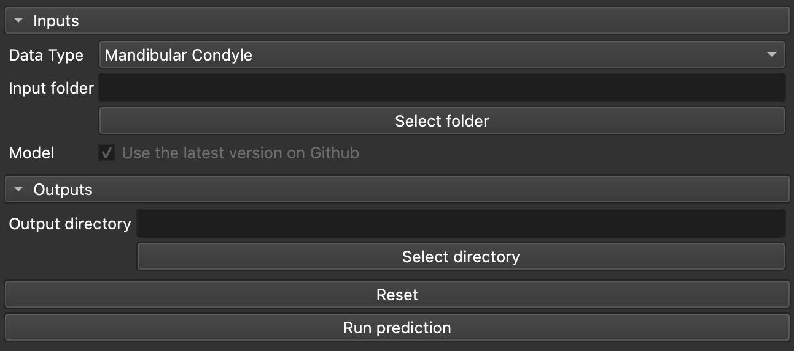
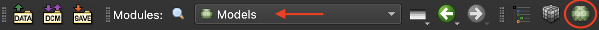
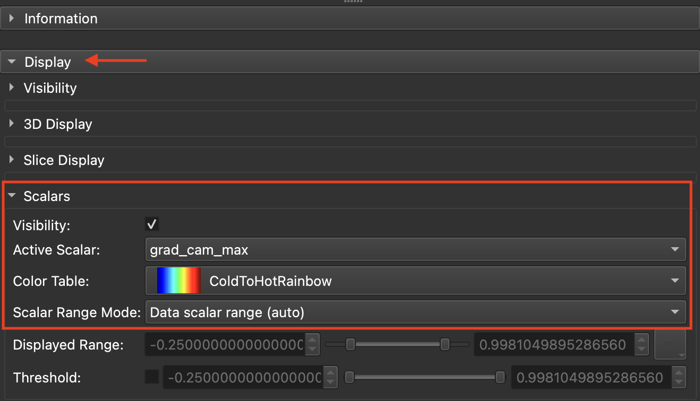
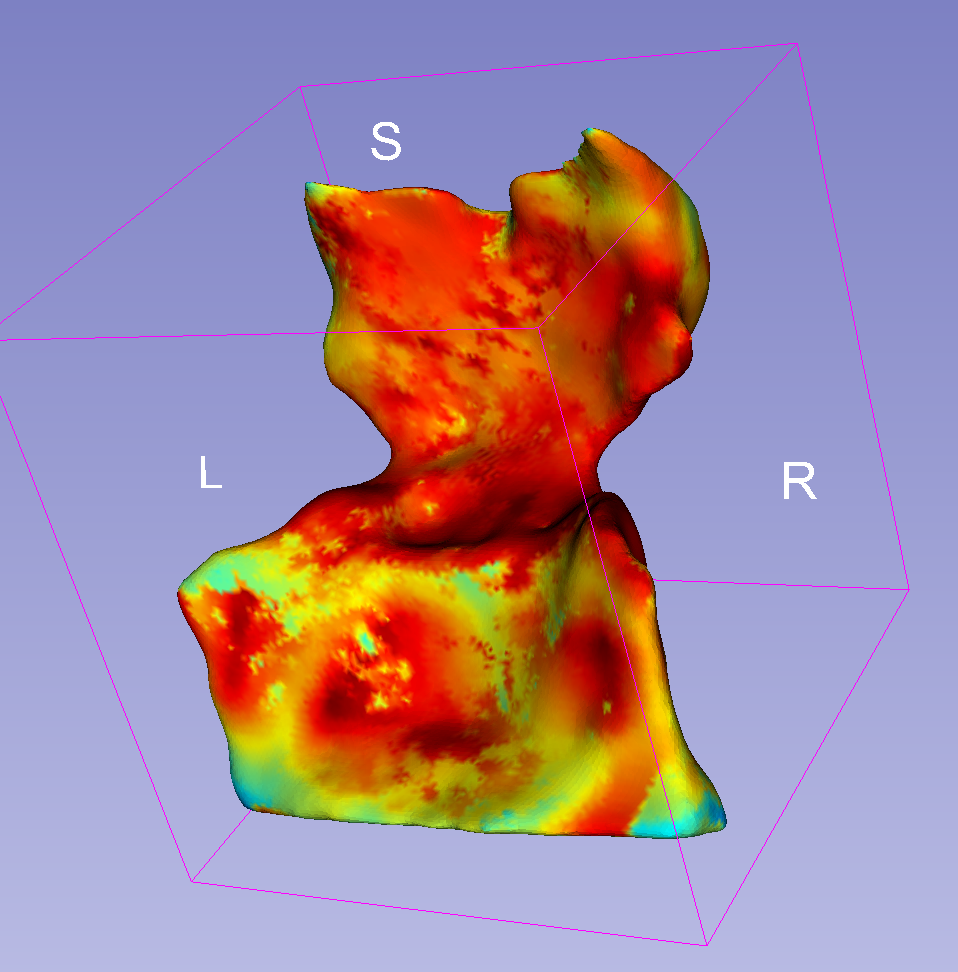

DOCShapeAXI — 3D 형상을 분류하고 판단 근거를 확인하기
DOCShapeAXI는 이미 분할된 메시를 받아 범주로 분류합니다. 경우에 따라 중증도 단계, 폐쇄 유무, 또는 연속적인 비율이 됩니다. 분류한 형상마다 신경망이 결정을 내리기 위해 가장 주의 깊게 본 곳을 보여 주는 맵을 메시 위에 직접 기록합니다.
언제 쓰는가
과두, 기도, 구순구개열 골결손처럼 이미 추출한 3D 형상이 있고, 증례마다
눈으로 판독하는 대신 자동 분류를 원할 때 사용합니다. 모델의 추론에 대한 단서를 주는
맵도 함께 얻습니다. DOCShapeAXI는 스스로 아무것도 분할하지 않습니다. 입력하는
.vtk 메시는 다른 도구(과두는 AMASSS, 기도 분할 등)로 이미
만들어져 있어야 합니다.
어떤 모델이 실행되고 어떤 범주가 나오는지는 선택한 데이터 유형 하나로만 결정됩니다.
- Mandibular Condyle(하악 과두) — 4개 클래스 중 하나의 중증도 단계.
- Nasopharynx Airway Obstruction(비인두 기도 폐쇄) — 한 번의 실행에서 차례로 나오는 세 가지 결과: 폐쇄 유무(2개 클래스), 중증도 단계(4개 클래스), 0에서 100 사이의 연속적인 폐쇄 비율.
- Alveolar Bone Defect in Cleft(구순구개열 치조골 결손) — 4개 클래스 중 하나의 중증도 단계.
세 중증도 단계 모두에서 4개 클래스는 사실 연속적인 0–100 척도를 4등분한 것입니다. 클래스 1은 가장 낮은 4분위, 클래스 4는 가장 높은 4분위에 해당합니다.
필요한 것, 얻는 것
준비할 것
- 이미 분할된
.vtk메시가 들어 있는 폴더. 모두 같은 형상 유형이어야 합니다 - 목록에서 고른 데이터 유형: 과두, 기도, 구순구개열
- 실행 전에 미리 만들어 둔 출력 폴더
결과물
- 모든 메시와 그 예측을 나열한 csv, 작업마다 열 하나
- 작업마다 각 메시의 사본. 설명 가능성(explainability) 맵을 점별 스칼라로 담고 있습니다
- 원본 메시는 건드리지 않습니다
사용 절차
- 데이터 유형을 고릅니다. 하악 과두, 기도 폐쇄, 구순구개열 골결손 중 하나입니다. 이 선택 하나로 어떤 모델을 내려받고 어떤 범주가 나올지 정해집니다.
- 입력 폴더를 지정합니다. 방금 고른 유형의 이미 분할된
.vtk메시만 들어 있어야 합니다. - 출력 폴더를 만들고 지정합니다. 그 폴더로 처음 실행할 때 해당하는 학습된 모델이 자동으로 내려받아집니다 (약 70 MB).
- 실행합니다. 기도의 경우 폐쇄, 중증도, 비율의 세 단계가 자동으로 이어서 실행되고, 나머지 두 유형은 한 번이면 충분합니다. 이어서 모든 메시에 설명 가능성 맵이 바로 생성되며, 따로 할 일은 없습니다.

결과 읽기
예측 csv는 메시 목록에 작업마다 열 하나를 추가합니다. 중증도 단계나 이진 폐쇄 판정은 클래스(정수), 기도의 연속 비율은 0에서 100 사이의 숫자입니다. 클래스에는 신뢰도 점수가 따라오지 않습니다. DOCShapeAXI는 결정한 범주만 알려 줄 뿐, 인접한 두 클래스 사이에서 얼마나 아슬아슬한 판정이었는지는 알려 주지 않습니다.
설명 가능성 맵을 보려면 해당 작업의 explainability 하위 폴더에 생성된 메시를 여십시오. Slicer의 Models 모듈에서 Scalars 탭의 Active Scalar를 관심 있는 클래스 이름의 배열로 설정하고(분류 작업은 클래스마다 배열 하나, 연속 비율은 배열 하나), ColdToHotRainbow 색상표를 적용합니다. 따뜻한 영역은 그 클래스 쪽으로 가장 크게 작용한 곳이고, 차갑거나 0인 영역은 그 클래스에 대해 모델의 주의를 특별히 끌지 않은 곳입니다.
모델은 두 가지 정보원을 결합해 결정합니다. 샘플링된 점군의 형상과 메시의 여러 시점 렌더링입니다. 설명 가능성 맵은 두 번째만 설명합니다. 결정이 주로 점군 기하에 의존했다면 보이는 맵은 흐릿하게 나옵니다. 그런데 결정에 뚜렷한 초점이 정말로 없어서가 아니라 그 때문이라는 것을 알려 주는 표시는 없습니다.
메시에서 샘플링하는 점은 매번 같은 방식으로 뽑히지 않습니다. 따라서 같은 파일을 두 번 처리하면 돌출도(saliency) 맵이 조금 다를 수 있고, 두 클래스의 경계 근처에 있는 증례에서는 예측 클래스가 달라질 수도 있습니다.



문제가 생기면
지정한 폴더가 아직 없으면 모델 다운로드가 그냥 건너뛰어지고, 오류는 나중에 모델을 불러올 때에야 드러납니다. 시작하기 전에 출력 폴더를 직접 만드십시오.
처리할 메시 목록은 출력 폴더에 아직 없을 때만 다시 만들어집니다. 출력 폴더를 바꾸지 않고 입력 폴더에 메시를 더 넣으면 그 메시는 처리되지 않습니다.
내려받은 모델은 캐시되지 않습니다. 새 출력 폴더마다 모델 전체를 다시 내려받습니다. 여러 번 일괄 처리할 때는 가능하면 같은 출력 폴더를 재사용하거나 이전 폴더를 정리하십시오.
예측 열은 다시 실행할 때마다 제자리에서 덮어쓰이지만, 다른 작업에서 남은 열은 결코 지워지지 않습니다. csv 안에 나란히 남습니다.
더 읽을거리
DOCShapeAXI 자체에 관한 문헌
- Prieto et al., SPIE Medical Imaging 2024 — ShapeAXI: Shape Analysis Explainability and Interpretability. 이 모듈이 구동하는 프레임워크입니다. 3D 형상을 분류한 뒤, 표면의 어느 부분이 결정을 이끌었는지 보여 줍니다.
방법론 관련 문헌
- Mattos et al., Journal of Dentistry 2025 — Explainable artificial intelligence to quantify adenoid hypertrophy and airway obstruction. 같은 프레임워크를 기도에 적용한 연구입니다. 설명 맵이 무엇을 만들어 내는지, 그리고 어떻게 읽는지 보여 주는 완결된 예시입니다.
- Miranda et al., Scientific Reports 2023 — Interpretable artificial intelligence for classification of alveolar bone defect in patients with cleft lip and palate. 같은 방식으로 다룬 또 다른 임상 사례이며, 오픈 액세스입니다.
- Selvaraju et al., ICCV 2017 — Grad-CAM: Visual Explanations from Deep Networks via Gradient-based Localization. 모듈이 표시하는 히트맵의 바탕이 되는 방법과 그 한계를 다룹니다. 히트맵을 해석하기 전에 알아 두는 것이 좋습니다.
이 도구의 전체 참고문헌 — 찾아낸 것과 찾아봤지만 없었던 것 — 은 출처 페이지에 있습니다.
실제 동작 방식 → 아틀라스 페이지: 신경망의 두 가지 분기, 설명 가능성 맵으로 실제로 역전파되는 것, 필요한shapeaxi 버전, 코드에서 발견된
취약 지점.